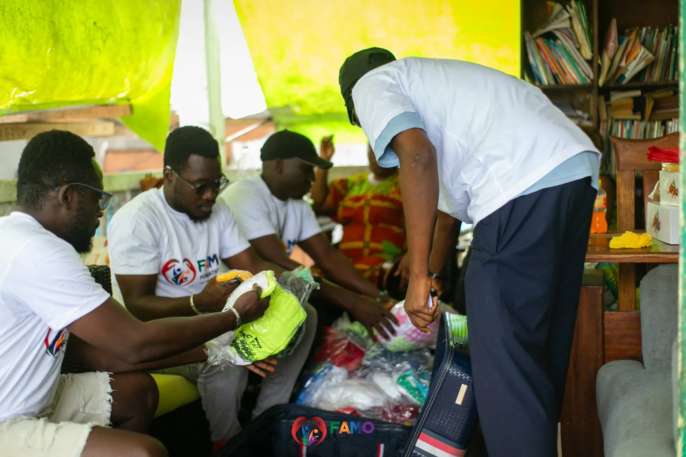
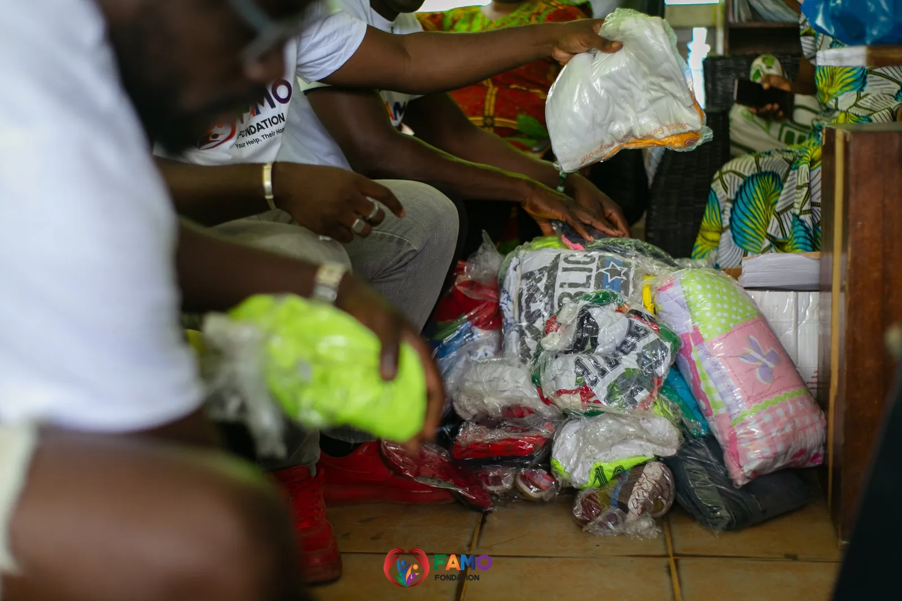
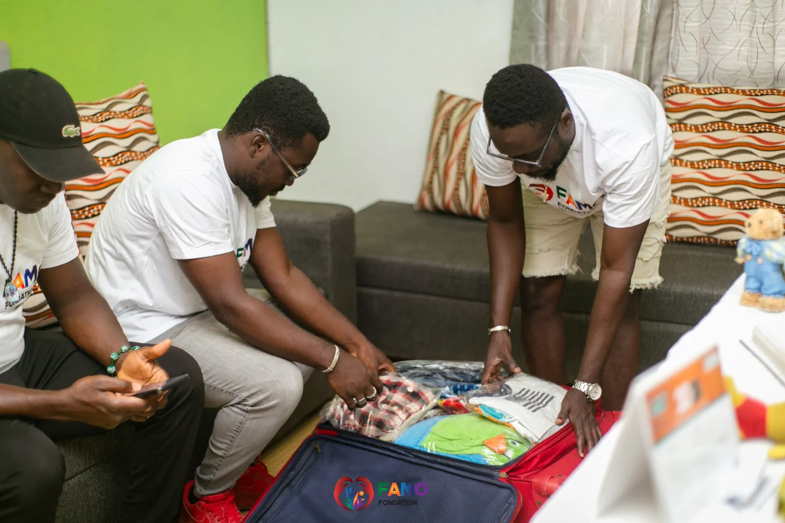

Soutien aux démunis
Assurer la dignité et le bien-être des personnes les plus vulnérables : c'est le cœur de notre action humanitaire et sociale.

Un filet de sécurité
Nous offrons une aide humanitaire et un soutien social aux familles et aux individus en situation de précarité : distribution de denrées alimentaires, de vêtements et de produits de première nécessité, ainsi que des programmes de secours d'urgence en cas de catastrophe.
En collaboration étroite avec les communautés locales, nous identifions les besoins urgents et apportons des réponses rapides et efficaces aux personnes touchées par la pauvreté, les crises économiques et les catastrophes naturelles.
Reconstruire avec dignité
Ce filet de sécurité aide les familles à surmonter les moments difficiles et à reconstruire leur vie avec dignité et espoir. Nous encourageons aussi les initiatives locales de solidarité, car des communautés unies sont plus fortes face aux défis.
Soutenir ce programmeSur le terrain
Au Centre Solidarité Action Sociale (Centre SAS) de Korhogo, des enfants ont reçu des jouets et des bourses de formation.


Une action, une vie
Chaque don, petit ou grand, soutient nos programmes d'éducation, de santé et de solidarité auprès des familles des zones rurales de Côte d'Ivoire.
Faire un don